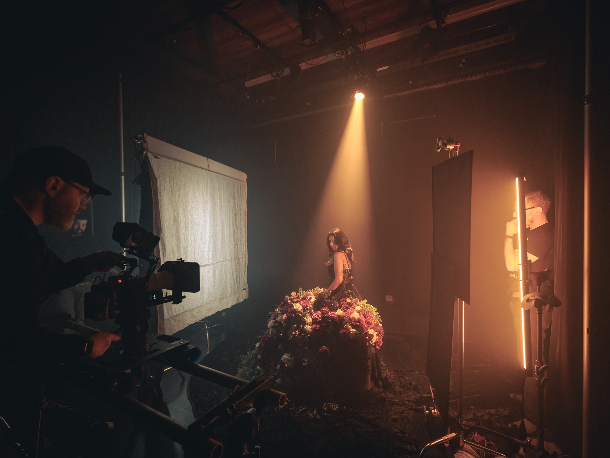
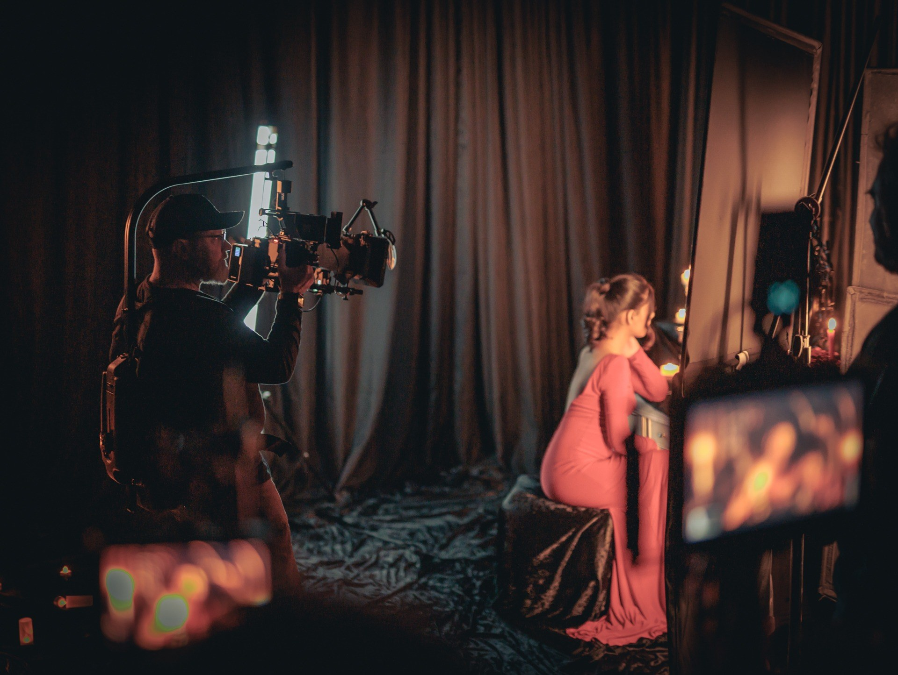
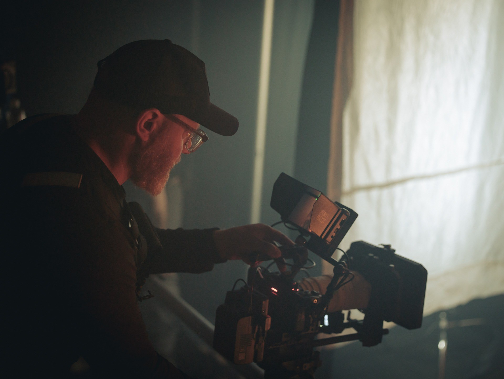

Honest answer: it depends. And we know that's the answer everyone hates — so this article is about why it depends, where the money actually goes, and the one question that makes the whole conversation easier for everyone: what's your budget?
The question nobody wants to answer first
Here's something we've learned making videos for small and medium businesses across Vancouver Island and BC: budget is the hardest thing for a client to bring up. Nobody wants to say a number first. Say it too high and you worry you'll pay too much. Say it too low and you worry you'll look unserious.
So most people ask "how much does a video cost?" and hope for a menu. But video isn't a menu item. The same production company can make you something for a few thousand dollars or a few hundred thousand, and both can be the right call. The price isn't the starting point. The budget is.
Tell us your budget and we'll tell you exactly what it can accomplish. That's a better deal for you than a price list ever will be.

Why we work backwards from your budget
When we know what you're comfortable spending, we can design the project to fit it — instead of designing a dream project and then hacking pieces off until it fits. Those are very different videos. The first one is built to succeed at its size. The second one is a big idea with the important parts missing.
Working backwards from budget means we decide together where your money matters most. Maybe it's a second shoot day. Maybe it's a professional actor. Maybe it's better sound. Every project has two or three levers that move the result more than everything else, and finding them is most of the job. That's the heart of creative direction — matching the idea to the money before a single frame gets shot.
Where the money actually goes
"Video production" sounds like one thing. It's closer to thirty things. Here's a plain-English look at what can sit inside a production budget:
- Pre-production
- Planning, meetings, scriptwriting, storyboarding, scheduling. The unglamorous work that makes shoot days calm and short — and cheaper.
- People on screen
- Professional actors, or real employees and customers. Actors cost money; employees cost time (more on that below).
- Voice over
- Professional VO talent and a proper recording, or none at all.
- Locations
- Location scouting, rental fees, permits. A great location can do the work of a whole set-design budget.
- Set design & props
- Everything in the frame that isn't people. Sometimes nothing; sometimes it's the whole look of the piece.
- Insurance
- Real productions carry it. It protects you as much as it protects us.
- Music licensing
- The right track, licensed properly, so your ad never gets pulled down or flagged.
- Crew & directing
- Director, camera operators, lighting, grip. Crew size scales with ambition — one person can shoot an interview; a commercial with staging needs hands.
- Cameras, lighting & gear
- Cinema cameras, lenses, lights, drones, stabilizers. Gear follows the idea, not the other way around.
- Sound
- Do you want good sound or bad sound? There's no in-between price. Audiences forgive imperfect picture long before they forgive bad audio.
- Post-production
- Editing, colour grading, motion graphics, sound mix, revisions. Where the story actually gets built.
- Delivery & launch
- Cutdowns for social, broadcast versions, captions, formats for every platform. One shoot can feed months of content — if it's planned that way.
Not every project needs every line. That's the point: the budget decides which lines earn their place.

The one-person-and-a-camera option is real
Let's be honest about the other end of the scale, because it's real and we do it: one experienced shooter, one camera, the right time of day, beautiful natural light. An employee who knows their job instead of an actor. No sound recording because the edit runs on music and captions. Minimal pre-production because you, the business owner, already know exactly what you want to show.

Will that beat a fully crewed production with professionals behind every department? Maybe. Genuinely — sometimes it's the right tool. A great fifteen-second social clip doesn't need a lighting truck. But a broadcast commercial representing your brand across BC absolutely does. The trick is knowing which project you're actually in — before you spend.
The hidden cost of "saving money"
One more thing to weigh, and almost nobody does the math on it: when you shoot it yourself to save money, you and your employees become the production crew. The hours you spend planning, filming, re-filming and editing are hours you're not doing the job that makes your business money — and you're still paying your staff while they stand in as actors, camera ops and coordinators.
Sometimes DIY still wins that math. Often it doesn't. Either way, it belongs in the calculation, because "free" video made by your highest-paid people isn't free.
So... what does a video cost?
Somewhere between a few thousand dollars and a number with a lot more zeros. Unhelpful? Exactly — which is why we don't start there.
Start with the number you're comfortable investing. We'll tell you straight what it can achieve, what we'd spend it on, and what we'd skip. If the honest answer is "wait and save for the bigger version," we'll tell you that too — it's how we'd want to be treated.
Have a number in mind? Send it over — no judgment, no obligation. We'll come back with what it buys, from a crew that's delivered 85+ videos across BC and Canada.
Quick answers
How much does a video cost in British Columbia?
Anywhere from a few thousand dollars to six figures, depending on scope — crew size, locations, talent, licensing, and how much pre-production the project needs. That range is exactly why we start with your budget and work backwards to what it can realistically achieve.
Why does Volare Media ask about budget first?
Because budget is the one number that turns a vague conversation into a real plan. When we know what you're working with, we can tell you honestly what it buys, where to spend it for the biggest impact, and what to leave out.
Can a small budget still get a good video?
Yes — if it's scoped honestly. One camera, beautiful natural light, a well-chosen location and a real employee instead of an actor can produce something genuinely effective. The key is matching the idea to the budget from day one.